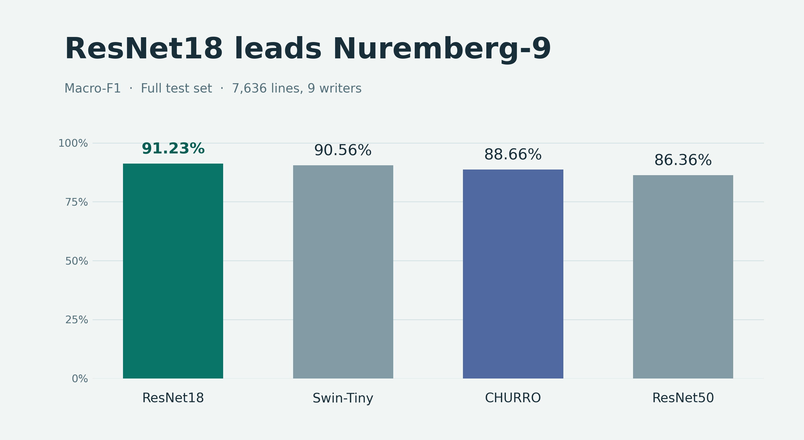

Nuremberg-9 Sonuçları
Tarihî el yazısı satırlarından yazarı tanıma
Modeller
Her modelin eğitim ayarı, test sonuçları, hata matrisi ve açıklama görselleri.
Dört modelin karşılaştırması
Dört model aynı test satırlarında değerlendirildi. Ana grafik dokuz yazarlı tam testin Macro-F1 skorlarını gösteriyor.

ResNet18 ve CHURRO-3B
İlk koşuda iki modelin nerede ayrıştığı ve farklı eğitim tekrarlarıyla hangi sorunun test edildiği.